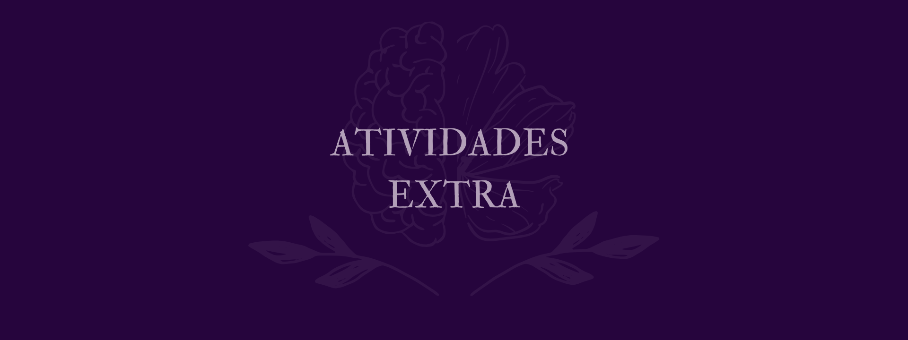
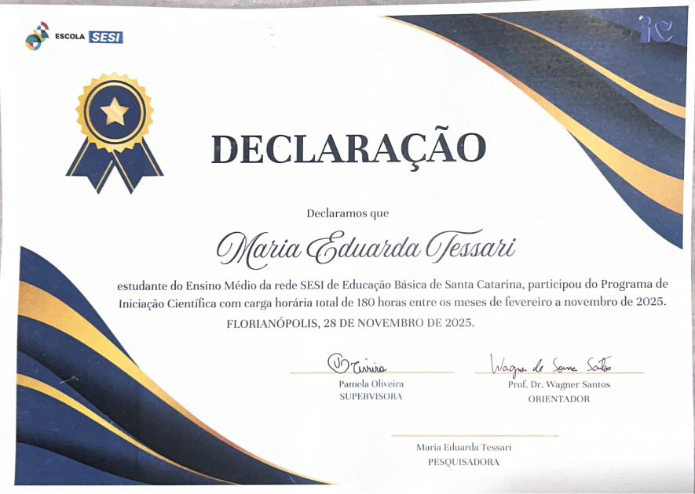
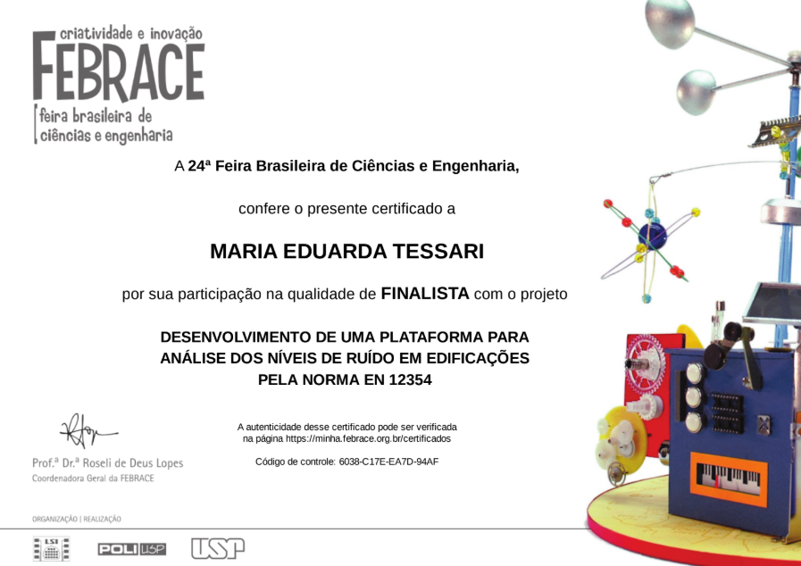
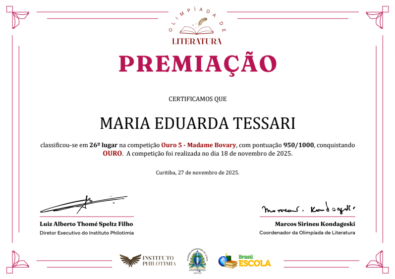
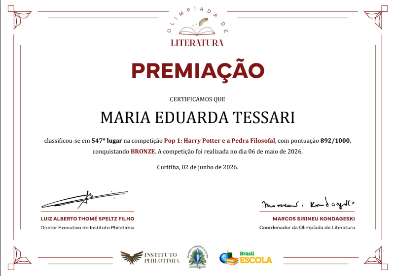
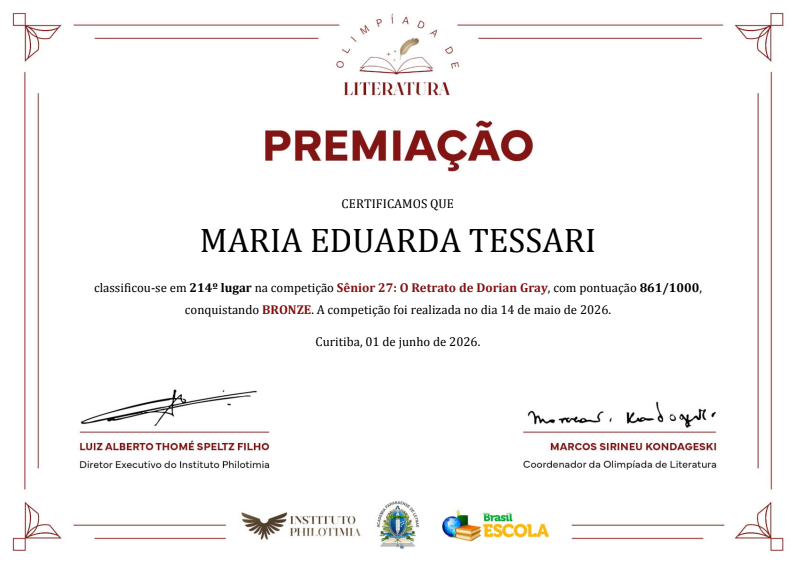
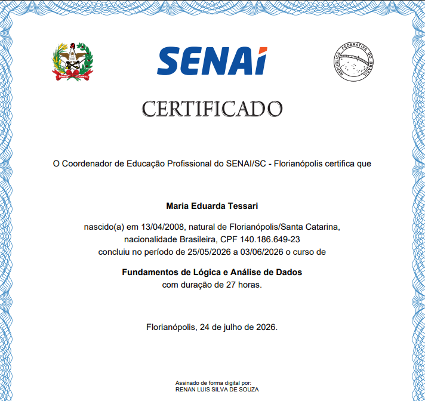

Participo da Iniciação Científica de Matemática na Escola Sesi desde 2025, uma jornada que tem me proporcionado experiências valiosas. Durante esse período, tive a oportunidade de participar de diversas feiras científicas, o que me permitiu expandir minha visão de mundo e trocar conhecimentos. Essa vivência aprimorou significativamente a minha oratória e me ajudou no desenvolvimento de habilidades essenciais, como a pesquisa metodológica, a escrita científica, a colaboração em equipe e a disciplina. Muito além de agregar para o meu futuro acadêmico e profissional, venho aprendendo na prática como aplicar o pensamento científico para desenvolver soluções inovadoras para problemas reais do nosso cotidiano.

Abaixo temos alguns registros de eventos e de projetos que fizemos na Iniciação Científica, como a FEBRACE, que aconteceu na USP, o Infomatrix onde ganhamos uma credencial, e outros eventos que contribuíram para o desenvolvimento do nosso projeto. Essas experiências foram fundamentais para o nosso amadurecimento acadêmico, permitindo que cada feedback recebido dos avaliadores fosse transformado em melhorias técnicas e teóricas. Mais do que meras participações, esses momentos documentam os desafios que enfrentamos, as soluções que criamos e o orgulho de ver nossa ideia ganhando forma e reconhecimento em cada nova etapa percorrida.
Uma das oportunidades que a Iniciação Científica me deu foi participar da 24ª Feira Brasileira de Ciências e Engenharia (FEBRACE) como finalista. Foi uma experiência incrível e transformadora, pois participar e conhecer uma feira tão grande como a FEBRACE me trouxe muitos ensinamentos que levarei tanto para a vida profissional quanto para a vida pessoal.


Também tive o prazer de participar da Olimpíada de Literatura. Foi minha primeira vez participando e foi incrível, o livro da vez era “Madame Bovary”, uma leitura que eu considero um pouco mais difícil de ser entendida, porém mesmo assim foi maravilhoso participar e adorei a história da Madame Bovary. Além do certificado, também ganhei uma medalha de ouro pela participação.
Após participar pela primeira vez, resolvi participar de mais edições da Olimpíada de Literatura para ganhar mais experiência e conhecimento e trabalhar a interpretação , dessa vez com a obra Harry Potter e a Pedra Filosofal, onde ganhei uma medalha de bronze.


Também participei da edição da Olimpíada com a obra "O Retrato de Dorian Gray", que foi mais desafiador pela sua leitura mais complicada, ainda assim fiquei feliz com meu rendimento e ganhei uma medalha de bronze.
Ganhei esse certificado de 27 horas de Fundamento de Lógica e Análise de Dados, com vários conteúdos trabalhados
